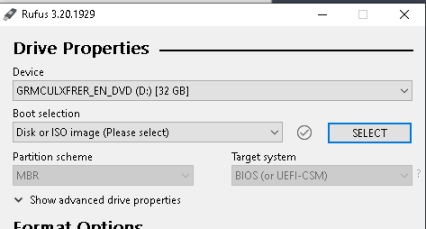
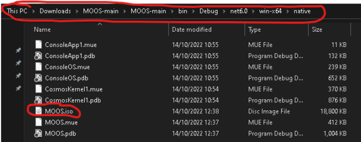
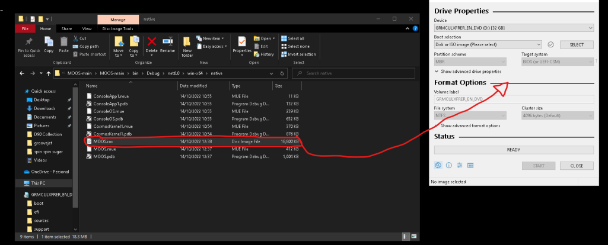

Booting MOOS on real hardware
Now that you've built MOOS in Visual Studio 2022, we can now proceed to boot MOOS on real hardware and get a big boost in performance rather than running everything on a virtual machine. Of course there may be some limitations to this mainly driver related issues, for example USB Drivers, Graphical Glitches, Kernel Panics and etc...
Tested Hardware
| Computer/Laptop Name | Status for working or failure | Date Passed |
|---|---|---|
| Dell Optiplex 390 | Worked | Fri, 14th October |
| Lenovo ThinkStation P150 | Worked | Thu, 13th October |
| Dell Optiplex 3010 | Worked | Thu, 13th October |
| Asus X515 Laptop | Failed to boot(BIOS Related Issues) | Thu, 13th October |
| HP 11-ak0027na Laptop | Failed to boot(GRUB denied to display anything on boot) | Fri, 14th October |
| ACER Aspire 1 Laptop | Failed to boot(BIOS Related Issues) | Fri, 14th October |
| Dell Optiplex GX520 | Worked | Thu, 13th October |
Guide
Step 1
To start testing MOOS on real hardware we will need to flash the MOOS iso or image onto any USB with at least 4GB or over, we advise getting something like this. If you have a USB already, we can begin. Next we will need a tool called Rufus which can be downloaded by clicking here, once you download it select your USB in the dropdown menu on Rufus
Step 2
Once you've selected the USB on Rufus, you then want to locate the MOOS ISO, the ISO is located in the bin folder of the root of your MOOS Source Code, if you not have it that means you have not compiled MOOS, click here to learn how to build MOOS, in the bin folder, then in the image below you want to go to the folders in the tabbar until you find the file "MOOS.iso"
Step 3
Now that we've located the MOOS Image, drag the MOOS Image to the rufus app, once done make sure Parition Scheme is set to MBR and Target System is set to BIOS(or UEFI-CSM), once done make sure the File System is set to FAT32, if you do not set the File System to FAT32 your BIOS may not recognise the USB, once your ready press "START"
